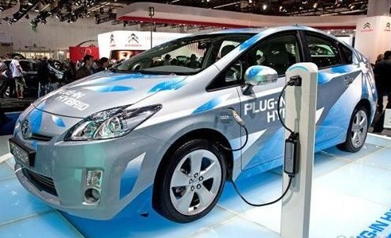

中国质量认证中心（英文缩写CQC）于近日修订了CQC11-469122-2015 电动汽车用驱动电机系统安全认证规则。
一、 涉及的认证产品
电动汽车用驱动电机系统。 申请类别：006012。
二、 规则实施要求
自公告之日起，申请人可按照修订后的实施规则申请认证；认证机构将采用修订后的实施规则实施认证并出具认证证书。对于原有证书采取 自然过渡的方式，申请人可结合产品变更、监督、复审等方式完成证书的转换。
三、规则主要修订内容
1、实施规则产品名称按照标准修订为电动汽车用驱动电机系统；
2、依据标准由GB/T 18488.1-2006变更为GB/T 18488.1-2015；
3、修改了监督抽样的相关要求。
